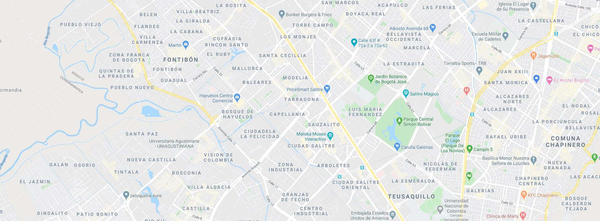

<section class="medico">
    <div class="medico__stepMap" *ngIf="show == 1">
        <mat-form-field class="example-full-width">
            <mat-label>Dirección</mat-label>
            <input matInput [(ngModel)]="place">
        </mat-form-field>
        <div class="medico__stepMap__map">

            <agm-map [latitude]="latitude" [longitude]="longitude" [zoom]="zoom">
                <agm-marker [latitude]="latitude" [longitude]="longitude" [markerDraggable]="true"
                ></agm-marker>
            </agm-map>
           <!--   -->
        </div>
        <button mat-raised-button class="medico__stepMap__button" color="primary" (click)="next()">Continuar</button>
    </div>

    <div class="medico__stepDate" *ngIf="show == 2">
        <mat-form-field>
            <mat-label>Fecha selecionada</mat-label>
            <input matInput [matDatepicker]="picker" [(ngModel)]="day">
            <mat-datepicker-toggle matSuffix [for]="picker"></mat-datepicker-toggle>
            <mat-datepicker #picker></mat-datepicker>
        </mat-form-field>
        <button mat-raised-button class="medico__stepDate__button " color="primary" (click)="next()">Continuar</button>
        <button mat-raised-button class="medico__stepDate__button " color="accent" (click)="prev()">Atras</button>
    </div>

    <div class="medico__stepTime" *ngIf="show == 3">
        <mat-form-field class="example-full-width">
            <mat-label>Hora</mat-label>
            <input matInput [ngxTimepicker]="with5Gap" [(ngModel)]="hour">
            <ngx-material-timepicker #with5Gap [minutesGap]="5"></ngx-material-timepicker>
        </mat-form-field>
        <button mat-raised-button class="medico__stepTime__button" color="primary" (click)="next()">Continuar</button>
        <button mat-raised-button class="medico__stepTime__button" color="accent" (click)="prev()">Atras</button>
    </div>

    <div class="medico__stepSummary" *ngIf="show == 4">
        <div class="medico__stepSummary__content">
            <mat-form-field class="example-full-width" >
                <mat-label>Dirección</mat-label>
                <input matInput disabled [(ngModel)]="place">
            </mat-form-field>
            <mat-form-field>
                <mat-label>Fecha selecionada</mat-label>
                <input matInput [matDatepicker]="picker" [(ngModel)]="day" disabled>
                <mat-datepicker-toggle matSuffix [for]="picker">
                    <mat-icon matDatepickerToggleIcon></mat-icon>
                </mat-datepicker-toggle>
                <mat-datepicker #picker></mat-datepicker>
            </mat-form-field>
            <mat-form-field class="example-full-width">
                <mat-label>Hora</mat-label>
                <input matInput placeholder="hour" [(ngModel)]="hour" disabled>
            </mat-form-field>
        </div>
        <button mat-raised-button class="medico__stepSummary__button" color="primary" (click)="next()">Confirmar cita</button>
        <button mat-raised-button class="medico__stepSummary__button" color="accent" (click)="prev()">Atras</button>
    </div>

    <div class="medico__stepFinis" *ngIf="show == 5">
        
        <a mat-raised-button class="medico__stepFinis__button" color="primary" routerLink="/" style="padding-top: 10px;">Finalizar</a>
    </div>
</section>
